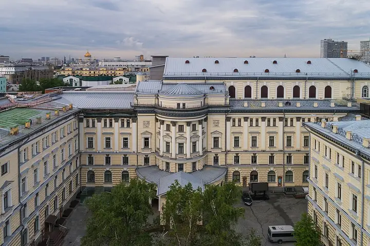
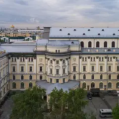

Подборку собрали 20 октября, прошедшие события скрыты. Свежая афиша — на главной

Фото: A.Savin, Free Art License · Wikimedia Commons
Концертный зал · ЦАО
Московская консерватория
Большой и Малый залы: классика почти каждый вечер, есть недорогие билеты на балкон.
- ₽ · до 1 500 ₽ на человека
- в 2 планах
- 1 событие в афише
Позвать сюда: Московская консерваторияОткрыть в каталоге: Московская консерваторияМаршрут до места: Московская консерватория
Адрес и детали
- Адрес
- Большая Никитская ул., 13/6
Открыть на Яндекс Картах (в новой вкладке) - Метро
- м. Охотный ряд
- Округ
- Центр (ЦАО)
- Цена
- до 1 500 ₽ на человека
- Телефон
- +7 (495) 629-91-68
Планы с этим местом 2

- Московская консерватория · Концертный зал · м. Охотный ряд
- 1 минута пешкомMamie · Бистро
Классика в Большом или Малом зале консерватории — бывают недорогие билеты на балкон, — а через дорогу Mamie, светлое бистро в духе французского дома на юге.
Открыть план: Консерватория и французское бистроПозвать сюда: Консерватория и французское бистро
Фото: A.Savin, Free Art License · Wikimedia Commons
- Московская консерватория · Концертный зал · м. Охотный ряд
- 1 минута пешкомUgolёk · Ресторан
Живая классика в Консерватории и ужин через дорогу — там всё готовят в дровяных печах.
Открыть план: Концерт и ужин на дровахПозвать сюда: Концерт и ужин на дровах
Фото: A.Savin, Free Art License · Wikimedia Commons
Афиша площадки 1
Московская консерватория, Малый зал · м. Охотный ряд · 1 760–5 000 ₽ · 6+
Музыка из «Щелкунчика» и «Спящей красавицы» в полумраке при свечах. Новогоднее настроение за три недели до праздника.
Подробнее: Щелкунчик. Спящая красавица. Чайковский при свечахПозвать сюда: Щелкунчик. Спящая красавица. Чайковский при свечахБилеты : Щелкунчик. Спящая красавица. Чайковский при свечах (страница с билетами, откроется в новой вкладке)
Фото: A.Savin, Free Art License · Wikimedia Commons
Похожие рядом
Что ещё рядом
Как позвать
- Выбери план, место или событие — в карточке адрес, цены и маршрут в Яндекс Картах.
- Нажми «Позвать сюда» — соберётся приглашение-игра для свидания или голосование для компании.
- Отправь ссылку в любой мессенджер: тебе ответят, а компания отметит, куда и когда может. Бесплатно и без регистрации.